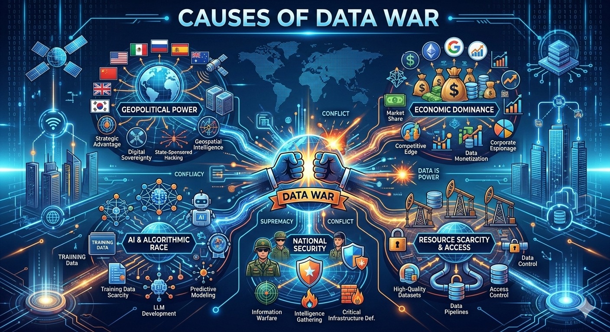

Example: In early 2026, several tech giants faced a massive hurdle when digital publishers and artists began using "data poisoning" tools. These tools subtly alter digital files so that if an AI "scrapes" them without permission, the data corrupts the AI’s learning process, making its outputs nonsensical.
